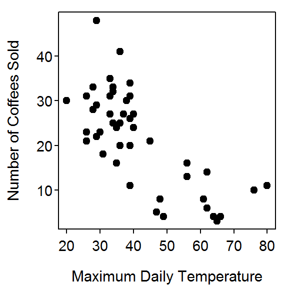
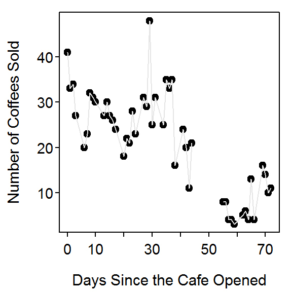

Class Excercise 3
- IBI.
- Percent impervious surface.
- The relationship between IBI and the percent of impervious surface is negative, nonlinear, and moderately strong with no obvious outliers. I did not report the value of the correlation coefficient because of the nonlinear form.
> d <- data.frame(imp=c(60,43,43,34,27,25,21,18,11,8,8,8,7,7,5,4,2),
IBI=c(9,11,13,23,31,31,21,23,27,37,39,29,31,43,33,35,37))
> plot(IBI~imp,data=d,pch=19,xlab="% Impervious Surface",ylab="IBI")

Class Excercise 4
-
The relationship between number of coffees sold at the cafe and maximum daily temperature is negative, nonlinear, and moderately strong with no obvious outliers. I did not report the value of the correlation coefficient because of the nonlinear form.
> d <- read.csv("cafedata.csv")
> plot(coffee.sold~max.temp,data=d,pch=19,xlab="Maximum Daily Temperature",
ylab="Number of Coffees Sold")

> corr(coffee.sold~max.temp,data=d,use="pairwise.complete.obs")
[1] -0.741302
-
The relationship between the number of coffees sold and the number of sodas sold at the cafe is negative, linear, and weak (r=-0.740) with no obvious outliers. I identified strength from the value of the correlation coefficient because of the linear form and lack of outliers.
> d <- read.csv("cafedata.csv")
> plot(coffee.sold~sodas.sold,data=d,pch=19,xlab="Number of Sodas Sold",
ylab="Number of Coffees Sold")

> corr(coffee.sold~sodas.sold,data=d,use="pairwise.complete.obs")
[1] -0.4021785
-
The relationship between the number of coffees sold at the cafe and the number of days since the cafe opened is primarily negative and linear, though there appears to be some cyclic trends in the data (i.e., linear decline for first 20 days, linear increase for next 15 days, linear decline for next 25 days, and then a linear increase for last 12 days). There is a weak outlier of a larger number of coffees sold on day 30. The strength is only moderate when compared against an overall linear trend but is somewhat strong when compared against the cyclic trend mentioned previously. The correlation coefficient was not reported due to outlier and cyclic trend present in these data.
> d <- read.csv("cafedata.csv")
> plot(coffee.sold~days.since.start,data=d,pch=19,xlab="Days Since the Cafe Opened",
ylab="Number of Coffees Sold")
> lines(coffee.sold~days.since.start,data=d,col="gray90")
